Drag And Drop¶
This is the reference document for constructing BMessage objects as used in Haiku’s
standard negotiated drag’n’drop actions. If you’re reading it for the first time, you should
probably read the entire thing. If you want to look up something, you can jump to any of the following:
Simple vs. Negotiated Drag’n’Drop
Basics of Drag and Drop
BMessage Formats in Negotiated Drag’n’Drop
Protocol for the Drag Message
Protocol for the Negotiation Message
Protocol for the Data Message
Summary of the Negotiated Drag’n’Drop Protocol
Prerequisites¶
Drag and Drop makes use of a number of elements of the Haiku programming kit, and you’ll need to be at least reasonably familiar with the following topics, in order to be comfortable reading this document:
The
BMessageclass, since dragged objects are sent to their targets asBMessageobjects. You should understand what aBMessageis, how to add data to aBMessageor extract data from it, how to send aBMessage, and where to put code to handle incomingBMessages.The
BViewclass. The drag and drop action is fundamentally a GUI operation, andBViewobjects are the most important objects in handling GUI events; subclasses ofBVieware where you will most often define code to both initiate a drag, and handle a drop.The Translation Kit, if you wish to make use of Haiku’s built-in translation abilities to (for example) drag a JPEG image from an application, to another application that only understands raw bitmaps.
Simple vs. Negotiated Drag’n’Drop¶
Roughly speaking, you can do two different kinds of drag and drop operations; both appear the same to the user, but they differ in the complexity of the background communication between the source of the drag, and the drop target.
Simple Drag’n’Drop¶
A simple drag’n’drop is one where the action of dragging and dropping corresponds internally to a
single BMessage being sent, from the origin of the drag to the drop target. This was
the original drag’n’drop protocol for Haiku, and is still highly useful in dragging and dropping
which takes place within a single application, or within a tightly coupled set of applications which
“know about” one another. For example, you could drag around drawing elements of a drawing program
using this protocol; each drag operation would result in the drawing application sending a
BMessage within itself, and that BMessage would contain the data necessary
to indicate which drawing element had been moved, and to where. Using the built in drag’n’drop
abilities of Haiku in this manner will lessen your own workload, since many of the most basic
aspects, such as visually dragging a bitmap around on the screen, are handled automatically.
Negotiated Drag’n’Drop¶
A negotiated drag and drop is used in a more general context, when the originator of a drag and the receiver (drop target) of that drag do not necessarily know anything about one another. This more general drag’n’drop is necessary if we wish to make usage of Haiku, particularly it’s media-related applications, as intuitive to the user as possible. For example, the user should expect to be able to drag an image from one graphics program (say a viewer) to another graphics program (such as a paint program) with no difficulty. However, there are many different underlying data formats for representing images, and the two graphics programs will have to negotiate (with the aid of the Translation kit) for the most suitable or desirable format.
Note that the negotiated drag’n’drop protocol is not a “hard and fast” requirement; it is not enforced by the system, and could easily be modified; for example, you might need a particularly complex negotiation that takes more steps than defined in the standard. The major user of negotiated drag’n’drop you are likely to encounter right now is in Tracker, and we will talk about that in more detail later. Other applications may support negotiated drag’n’drop or may not. Also note that a simpler protocol was originally defined, and may still be used by older applications. It’s easy to make your code handle this older protocol; see the later section on “Handling the Old Drag’n’Drop Protocol”.
Basics of Drag and Drop¶
Let’s assume the user is working with two applications, and is going to drag something from the first application (which we’ll call the sender application) to the second application (which we’ll call the receiver application.) In a nutshell, here are the steps that make up this entire process:
Detection: Code in a
BViewobject of the sender application notices that the user has clicked on something of interest, and started dragging it. The monitoring code that notices this is usually spread out between theBView::MouseDown()andBView::MouseMoved()functions, and typically has to differentiate between the start of a real drag and drop, or a click that might (for example) select an object without dragging it, but that moves just one or two pixels because the user has a slightly jittery hand. The drag detection code will typically have to useBView::SetMouseEventMask()to temporarily enable full reporting of mouse movement (which is not normally reported to the application, for efficiency reasons).Initiation: Once the sender application’s detection code has decided a drag and drop action has been started, it initiates the drag and drop internally, by creating a
BMessageobject containing information about the nature of the object being dragged, and then passing thatBMessageto theBView::DragMessage()function.BView::DragMessage()also determines how the object being dragged appears visually to the user; you can pass it aBBitmap, in which case it will drag a cool picture around the screen, or you can pass it aBRect, in which case it will drag a boring old rectangular outline. After callingDragMessage(), the sender’s code should remember to delete its own copy of theBMessage. Note: The sender should not delete theBBitmapit passes toDragMessage(); this will be done by the systemDrag: This is the easy part; once the sender application has initiated the drag, as described in the previous step, dragging a visual representation around the screen is handled by the system. The next time application code is invoked is on the …
Drop: The user releases the mouse button while the mouse is in a
BViewof the receiver application. This causes theMessageReceived()function of the recipientBViewto be invoked, with the draggedBMessageas its received message. This is the first of threeBMessageobjects that can be sent as part of a single drag and drop action. We’ll call this first message the drag message. In a simple drag’n’drop, the drag message can contain just about anything you want it to; since both the sender and the receiver “know about” one another, they presumably have a common private protocol, and the receiver can analyze the message and do whatever is required. In a negotiated drag’n’drop, the drag message does not typically carry the data that defines the object being dropped; for example, if you drop a block of text, the message that is dropped normally does not contain the text that was dragged. Instead, the drag message contains information about the different formats and methods by which the sender application may supply the data to the receiver application, and about which actions the receiver application can request of the sender application.Negotiation [optional, used in negotiated drag’n’drop]: The receiver application replies to the drag message with a second message, which is dispatched back to the sender application using the
BMessage::SendReply()function. We’ll call this second message the negotiation message. The receiver creates the negotiation message by looking through the options supplied by the sender in the drag message, choosing one or more, and including those option in the message so that the sender will know which of its possible replies is actually desired. The negotiation message also contains information about what the receiver would like the sender to do with the dragged data; for example, if you drag a file to the Trash, the negotiation message sent back “from” the Trash will include a request that the sender delete the dragged data.Data Transmission [optional, used in negotiated drag’n’drop]: The sender examines the negotiation message sent back to it by the receiver, to find out which available data format the receiver wants the data in. The sender then packages up the data, and dispatches it off to the receiver in the data message. (Optionally, the sender can, at the request of the receiver, create a file through which it passes the data to the receiver, rather than passing the data directly in the
BMessage. We’ll talk about this when we discuss the details of the drop, negotiation, and data messages.)Completion [optional, used in negotiated drag’n’drop]: The receiver gets the data message from the sender, extracts the desired data, and uses it in whatever way it wants.
This sounds more complex than it is. A picture is worth a thousand words, so here is a simplified schematic of the process:

Example: Simple Drag’n’Drop¶
Before going on to more complex matters, let’s see just how simple “simple” drag’n’drop can be. The
code below defines a very simple application, which lets one drag around a black square in a window.
The application is both the sender (i.e., you click on the square in the application window to start
the drag), and the receiver (you release the mouse button within the application window, to
reposition the square). Most of the program code is “boilerplate”, similar to what would be found in
any application involving a BView. Those parts of the code pertaining specifically to
the drag and drop are given in bold.
/* Drag the black square around using drag'n'drop--a very
simple-minded program. The DETECTION, INITIATIOIN, DRAG,
and DROP steps correspond to those of the same name given
in the overview section, "Basics of Drag and Drop". */
#include <Application.h>
#include <InterfaceKit.h>
rgb_color black = {0, 0, 0, 64};
const char *APP_SIGNATURE = "application/x-vnd.Be-MyDragnDrop";
/* The constant below is arbitrary--the fact that is is 'drag' is
meaningless. However, it MUST be chosen so as not to conflict
with system-wide BMessage 'what' values--see the BMessage
documentation for details. */
// const uint32 MY_DRAG_ACTION = 'drag';
const uint32 MY_DRAG_ACTION = 0x64726167;
class MyDragDropView : public BView {
private:
BPoint _button_click;
BRect _SquareSides;
public:
MyDragDropView(BRect rect) : BView(rect, "",
B_FOLLOW_ALL_SIDES, B_WILL_DRAW) {
_SquareSides = BRect(20, 20, 90, 90);
}
void Draw(BRect where) {
SetHighColor(black);
FillRect(_SquareSides);
}
void MouseDown( BPoint where ) {
/* 1. DETECTION : Our detection code is pretty
simple-minded; if the user clicks in the black square,
they're starting a drag. */
if (_SquareSides.Contains(where)) {
// Turn on the event mask for all pointer events,
// so we'll know when
// the user lets go of the mouse button.
SetMouseEventMask( B_POINTER_EVENTS, 0 );
/* 2. INITIATION : Create a BMessage instance, and
pass it to BView::DragMessage() to start the drag. */
BMessage* drag_message = new BMessage( MY_DRAG_ACTION );
/* Remember, in the drag message,
where the drag started */
drag_message->AddPoint("click_location", where);
DragMessage( drag_message, _SquareSides, this );
/* 3. DRAG : this is handled by the user and system, we
don't write any code at all to do the dragging. The
next step will take place in the MessageReceived()
function. */
/* DON'T FORGET TO DELETE THE MESSAGE AFTER
YOU'RE DONE*/
delete drag_message;
}
}; /* end of MouseDown() */
void MessageReceived(BMessage *msg) {
/* 4. DROP : MessageReceived() can called for many
different messages. We're only interested in ones with a
'what' field of MY_DRAG_ACTION, as was created in
the MouseDown() function. */
if (msg->what == MY_DRAG_ACTION) {
BPoint clicked;
/* We put "click_location" into the original message,
now we can get it out */
msg->FindPoint("click_location", &clicked);
BPoint whereto;
/* The "_drop_point_" message field is automatically
inserted by the OS; is is the screen point the
mouse was on when the drag ended. */
msg->FindPoint("_drop_point_", &whereto);
/* Convert "_drop_point_" to view coordinates. */
whereto = ConvertFromScreen(whereto);
/* Move the square by the same amount the mouse moved
in the drag. */
_SquareSides.OffsetBy(whereto-clicked);
/* Ensure the view is redrawn */
Invalidate();
}
}; /* end of MessageReceived() */
}; /* end of MyDragDropView class */
class MyDragDropWindow : public BWindow {
public:
MyDragDropWindow(BRect frame)
: BWindow(frame, "Drag'n'Drop Example",
B_TITLED_WINDOW, B_NOT_ZOOMABLE) {
interior = new MyDragDropView(this->Bounds());
AddChild(interior);
Show();
}
bool QuitRequested() {
be_app->PostMessage(B_QUIT_REQUESTED);
return true;
}
private:
BView* interior;
}; /* end of MyDragDropWindow class */
class MyDragDropApp : public BApplication {
public:
MyDragDropApp::MyDragDropApp() : BApplication(APP_SIGNATURE) {
BRect windowRect;
windowRect.Set(50,50,349,399);
new MyDragDropWindow(windowRect);
}
private:
MyDragDropWindow* theWindow;
}; /* end of MyDragDropApp class */
/* The "main" function creates and runs the application.*/
int main(void) {
MyDragDropApp *theApp;
theApp = new(MyDragDropApp);
theApp->Run();
delete theApp;
}
BMessage Formats in Negotiated Drag’n’Drop¶
With simple drag and drop, you are free to use BMessage more or less as you wish; you
simply define a what member constant which will uniquely identify your dropped message to the
target, and put whatever data you wish into the body of the message. The receiver will examine the
what member of the message and, assuming it understands it at all, should then know how to extract
the data (if any) in the body of the message.
Negotiated drag and drop is different, since it assumes that the sender and receiver have no implicit knowledge of each other. In order for the two ends of the action to communicate effectively, they must agree on a standard protocol between them. This protocol takes the form of an agreed-up structure for each of the drag message, negotiation message, and data message, as described in the following sections.
Hint
There’s a great little utility called ViewIt, which should be available (as part of a package of utilities called Geb’s Goodies) on the usual download sites, such as www.bebits.com. You can drag anything onto ViewIt, and it will display the contents of the drag message.
Protocol for the Drag Message¶
The drag message is the one initially sent out by the sender application. It must be assigned a what
member of B_SIMPLE_DATA by you, the programmer. The message fields in the drag message
can be split into those that are provided by you, and those that are filled in automatically by the
system. Let’s take a look at each of these.
Drag Message Fields Filled In by Your Code¶
The following drag message fields will need to be filled in by your code. Detailed descriptions of these fields are found below.
Field |
Description |
|---|---|
|
These fields indicates the formats the sender is willing to provide data in, and are filled in together. |
|
A list of actions the sender is willing to perform on its data, at the request of the receiver. |
|
A suggested name for the data being sent, which may be used at the option of the receiver. This field is optional. |
|
Used to preserve context information across asynchronous message sendings. |
|
This was used by the old [obsolete] drag’n’drop protocol, to contain the data being dragged. You don’t need to use it with modern applications. |
Drag Message Fields Filled In by the System¶
Field |
Description |
|---|---|
|
The values in these fields are set automatically by the system; do not set them yourself. They give information about where the drop took place on the screen. |
Detailed Description of the Drag Message Fields¶
be:types, be:filetypes, and be:type_descriptions Fields¶
The main purpose of negotiated drag’n’drop is to come up with an optimal compromise between the data
formats the sender application can provide something in, and the data formats the receiver can
accept that data in. Accordingly, the three most important message fields in the drag message are
the be:types and be:filetypes fields; be:type_descriptions accompanies the be:filetypes
field, so we’ll describe it here also. Each of these fields is filled with a list of string values.
Values for these fields will typically be obtained from the Translation Kit, by asking the Translation Kit which data formats it can provide the dragged data in, and filling the fields in with the information returned by the calls to the Translation Kit. (For example, if appropriate translators are installed on the system, the Translation Kit might be able to translate a bitmap into any of JPEG, GIF, PNG, or TIFF images.)
The specific meanings of these three fields are as follows:
Field |
Description |
|---|---|
|
each value in this field indicates a data format the sender is willing to provide its sent
data in. This is a string value (a MIME string, actually), but you won’t normally need to know what
the string actually is, since you’ll obtain it from the Translation Kit, or from a predefined
constant. If |
|
Similar Important See the section below in “Passing Data in a File” for further notes on this, if you plan to make use of it. |
|
This is just a user-friendly description of the corresponding format in |
The be:actions Field¶
In negotiated drag’n’drop, the sender and receiver negotiate not only the format of the sent data,
but also the action performed on that data. Should the data be copied from the sender to the
receiver, moved from the sender to the receiver, or something else? The first part of this “actions
negotiation” takes place in the drag message via the be:actions field.
be:actions contains a list of values (32-bit integers actually) which define the actions the sender
is will to perform at the request of the receiver. No action will actually be carried out until and
unless the receiver requests it. The possible action requests are given by the following constants:
Constant |
Description |
|---|---|
|
The sender is willing to provide a copy of the dragged object. |
|
The sender is willing to move the target over to the receiver; if the receiver requests this, then after the sender sends a copy of the data, it will delete its own copy. |
|
The sender is willing to provide a link to the target. [xxx what does this mean exactly? If
the sender is the Tracker, I can understand it, but in Chris’ document, |
|
The sender is willing to delete its data without even sending it. This is useful if, for example, you want your user to be able to drag something from the application to the Tracker’s wastebasket icon, and have the object removed from the application as a result. |
In addition to the above four “standard” actions, there are a few actions which can be carried out specifically when the Tracker is the sender application [xxx does the Tracker have to be the receiver as well? If so, should we even document these actions?]:
Constant |
Description |
|---|---|
|
One or more elements (files, directories) are selected in a Tracker window; the Tracker is willing to copy these files to an entry_ref type destination, which will be supplied in a refs field in the negotiation message, should the receiver application choose this action. |
|
One or more elements (files, directories) are selected in a Tracker window; the Tracker is willing to move these files to an entry_ref type destination, which will be supplied in a refs field in the negotiation message, should the receiver application choose this action. |
[xxx Chris’ document implies the Tracker can also make links due to a specific Tracker action, is
there something like a B_LINK_SELECTION_TO?]
The be:clip_name Field¶
This is an easy one. If present (it doesn’t have to be), it contains a string suggesting a name for
the data which will be sent. This name may be used by the receiver; for example, if data is dragged
onto the Tracker, the Tracker will try to use the value in be:clip_name as the basis for the name of
the clipping file it creates from the data. However, the receiver is under no obligation to pay
attention to be:clip_name.
be:originator and be:originator_data Fields¶
Let’s say you’re a sender application, and you’ve asynchronously sent off a drag message. Then you
receive a BMessage. Is it the reply to your original message? And if so, how do you
access data about the original drag (such as where the mouse was clicked) you might need in order to
complete the data message? Since the original drag message was sent asynchronously, your application
went merrily on its way immediately after sending, and no longer remembers what the heck it dragged
off before. What do you do? This is where be:originator and be:originator_data come in.
be:originatorshould be filled in with something that identifies your application to itself; it doesn’t really matter what. We’ll see how this is used in a second…be:originator_datacan be filled in with data about the drag that you’ll need to use later on in the drag’n’drop negotiation. This could be something as simple as the mouse position, or it could be a much more complex piece of information about the context of the application at the time the drag was started. It’s up to you, and of course, you don’t have to usebe:orginator_dataat all.
If you fill in be:originator and be:originator_data properly on all of your outgoing drag
messages, then here is what your app can do when it receives a BMessage that may be a
negotiation message responding to a previously sent (asynchronous) drag message:
Your app checks to ensure that the incoming message has the correct format for a negotiation message (we’ll describe the format of negotiation messages in a bit). If it does, then go on…
Your app uses
BMessage::IsReply()to check if the incoming message is a reply to a previous message.If the incoming message is in fact a reply, your app uses
BMessage::Previous()to obtain the original message; the message the incoming message was sent in reply to.Now, your app can examine be:originator in the original message, to see if it recognizes that value as indicating a drag message sent out by itself. If it does, then the incoming
BMessageis in fact a negotiation message in response to your original drag message; your app can extract necessary context data from be:originator_data, and go on to construct and send the data message.
The be:data Field¶
This field was used in the original drag’n’drop protocol to carry the dragged data. It is not used in the negotiated drag’n’drop protocol.
The drop_point Field¶
This field contains a BPoint giving the screen coordinate of the mouse cursor, when the
drag was ended (i.e. when the mouse button was released and the data dropped.) It’s added
automatically by the system—you don’t create or add to it yourself.
The drop_offset Field¶
Whether you have your application display a bitmap or a rectangular outline during a drag, the
dragged area occupies a rectangle. (Though it may not appear so to the user, since with a bitmap,
sections of the bitmap can be transparent). _drop_offset_ gives as a BPoint the
distance from the top left point of the dragged area to the position of the mouse cursor within that
dragged area. [xxx I think this is correct but just want to be sure.]It’s added automatically by the
system—you don’t create or add to it yourself.
Passing Data in a File¶
Using a BMessage to pass a large amount of data from one application to another may not
be desirable; at the extreme, you may not have enough memory to accommodate the entire
BMessage. If you need to pass large amounts of data in a drag’n’drop operation, you may
prefer to do so via a file.
As far as passing data by a file goes, the sender application can indicate one of two things when sending the drag message to the receiver:
The sender can offer to pass the data in a file, as well as via a
BMessage. The receiver then has the option of accepting the data either through aBMessage, or through a file.The sender can state that it will only pass the data via a file. The receiver app, if it wants the data, had better agree.
In both cases, the sender’s ability to send data via a file is indicated by a value in the drag
message’s be:types field of B_FILE_MIME_TYPE. If B_FILE_MIME_TYPE is the
first entry in the be:types field, then the sender will pass data only in a file, and anything
else in be:types will be ignored; if there are entries in be:types before a value of
B_FILE_MIME_TYPE, then those entries are types with which the sender is prepared to send
data directly in the data message.
If the sender has indicated, via the presence of a B_FILE_MIME_TYPE value in be:types,
that it is willing to pass data via a file, then the formats in which it can provide that file are
listed in the be:filetypes field. If a value of B_FILE_MIME_TYPE is not present
somewhere in the be:types field, then the sender is not able to pass data via a file, and any
values in the be:filetypes field will be ignored.
Protocol for the Negotiation Message¶
When the receiver application receives the initial drag message from the sender application, it
examines the data message in that message, to ascertain what actions the sender application can
carry out, and how it can provide the desired data in the final drag message. Using this
information, the receiver application formulates the negotiation message, which it sends back as a
reply to the original drag message using the BMessage::SendReply() function.
A Negotiation Message is Characterized by its what Member
Recall that the drag message constructed by the sender application contained (among other things) a
be:actions message field, which indicated the actions the sender was willing to perform upon the
dragged data. The allowable actions (at the time of this writing—further actions may be added in the
future) are given by the following constants:
B_COPY_TARGETB_MOVE_TARGETB_LINK_TARGETB_TRASH_TARGETB_MOVE_SELECTION_TO(for Tracker drags only.)B_COPY_SELECTION_TO(for Tracker drags only.)
When constructing the negotiation message, the receiver application will choose one of the actions
listed in the data message’s be:types message field (remember, not all allowable actions will
necessarily be listed in this message field), and use that action as the value of the what member in
the negotiation message. This will inform the sender application of which of the possible actions is
desired by the receiver.
Message Fields in the Negotiation Message¶
In addition to the action contained in the what member, the negotiation message may also contain a
number of message fields; exactly which message fields are defined depends somewhat on the requested
action. The allowable message fields are:
Field |
Description |
|---|---|
|
One or more strings denoting the data formats the receiver is willing to accept the dragged
data in, as part of the data message. These should be chosen from the be:types field of the drag
message. If the |
|
One or more strings denoting the data formats the receiver is willing to accept file data in,
assuming of course that the sender indicated in its drag message that it was willing to provide the
dragged data via a file. The values in the negotiation message’s |
directory |
If the sender decides to (or is forced to) pass data to the receiver via a file, the
|
name |
If the sender decides to (or is forced to) pass data to the receiver via a file, the string in this field should be used as the name of the file. Note: the receiver should create the file before deciding on a file name, to ensure that file name is in fact available, and will remain available. |
Of course, you can leave out fields that don’t apply to a particular action. For example, if the
receiver chooses B_TRASH_TARGET as the action (by putting a value of
B_TRASH_TARGET into the what member of the negotiation message), no message fields are
required; in fact, the sender doesn’t even need to respond to a request of
B_TRASH_TARGET with a data message, it simply has to delete the dragged data.
Protocol for the Data Message¶
The data message is the third and final message sent as part of a negotiated drag’n’drop. It is sent
in response to a negotiation message, using the BMessage::SendReply() function, and is
sent only if the sender application has elected to pass the dragged data directly in a message. If
the sender application passes data to the receiver via a file, no data message is sent. [xxx just
want to check, is this correct? It would seem you’d want to at least send confirmation that the
write was successful. Or should the receiver just do a node monitor kind of thing?]
When Data Is Sent in the Data Message¶
If the sender elects to send the dragged data directly in the data message, then the data message will be constructed with the following structure:
A
whatmember set to the value of theB_MIME_DATAconstant.A single message field, whose name indicates the type of mime data being sent, and whose contents consist of the data itself. For example, if you drag some text from one text processing window to another, the final data message (after the drop and negotiation messages have been sent) might contain a message field named “text/plain”, which contains the text being dragged. Alternatively, if you dragged text from an HTML viewer, the data message might (depending on the negotiations) have a single field called “text/html”, which would contain the text including the html formatting statements.
Note that when the data messages arrives at the receiver, it may contain more than the single message field described above; other message fields might be added automatically, by parts of the system. However, the message field above is the only one you add.
Handling Drops from ‘Old’ Applications¶
Negotiated drag’n’drop was defined relatively recently; older applications may still use the “old-style” drag’n’drop. It’s simple for your application to take into the account that it might be a receiver for such a drop.
Under the old style drag’n’drop, a single message was sent from the sender to the receiver, with a
what member of B_MIME_DATA, and the value of the dragged data in the be:data message
field. [xxx how is the type of the enclosed data determined?] Since your receiver application will
need to monitor for BMessages with a what field of B_MIME_DATA (i.e. your
application will need to look for the data messages that might occur as part of a negotiated
drag’n’drop), it’s simple to add in a bit more code that handles the fact that such a message may
occur without being part of a negotiation, and may contain a be:data field.
Summary of the Negotiated Drag’n’Drop Protocol¶
Drag Message¶
The structure of a drag message is as follows:
A
whatmember ofB_SIMPLE_DATAThree message fields
be:types,be:filetypesandbe:type_descriptions, which contain (respectively) formats the sender is willing to pass data in via the data message, formats the sender is willing to pass data via a file, and user-friendly descriptions of the different formats.A message field
be:actionscontaining a list of actions the sender is willing to perform at the request of the receiver.An optional field
be:clip_nameindicating a suggested name for a clipping.Optional fields
be:originatorandbe:originator_data, which may be used to pass store context information during an asynchronous drag’n’drop._drop_point_and_drop_offset_, which are filled in by the system, and provide information about where the mouse cursor was positioned when the drop took place.
Negotiation Message¶
The structure of a negotiation message is as follows:
A
whatmember, which is one of the values extracted from thebe:actionsfield of the drag message to which this negotiation message is a reply.A list of formats in the
be:typesmessage field, chosen from the list provided in thebe:typesof the drag message. This indicates the formats the receiver is willing to accept data in. If the value given by the global constantB_FILE_MIME_TYPEis in the list, then the receiver is willing to accept data through a file, as well as through the data message. Note that values after an entry ofB_FILE_MIME_TYPEwill be ignored; thus, ifB_FILE_MIME_TYPEis the first element ofbe:types, then the receiver is willing to accept data only through a file. If there is more than one value inbe:types, the first value is the preferred format.A list of formats in the
be:filetypesmessage field, which indicates file formats the receiver is willing to accept, if data is passed in a file. This is meaningful only ifbe:typescontains a value ofB_FILE_MIME_TYPEas one of its values. If there is more than one value inbe:filetypes, the first value is the preferred format.directoryandnamefields, which should be provided if the negotiation message has stated that the receiver is willing to accept data via a file.directoryis anentry_refspecifying where the file should be placed, andnameis a string specifying the desired name of the file.
Data Message¶
The structure of a data message is as follows:
A
whatmember ofB_MIME_DATA.A single data message field added by the program code; the name of this field is the mime type of the enclosed data, and the value of this field is the data itself. For example, a block of plain text would be sent in a message field named “text/plain”. The mime type for the enclosed data is chosen from the list of formats in the
be:typesfield of the negotiation message to which this message is a reply.